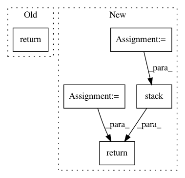

98e43878ec0e56f4bacd2960169a483af8f44c31,app/ops.py,,pit_mse_loss,#,262
Before Change
s_loss_sets = tf.einsum(
"bij,pij->bp", s_cross_loss, s_perms_onehot)
s_loss = tf.reduce_mean(tf.reduce_min(s_loss_sets, axis=1))
return s_loss
After Change
tf.square(s_x - s_y), reduce_axes)
s_loss_sets = tf.einsum(
"bij,pij->bp", s_cross_loss, s_perms_onehot)
s_loss_sets_idx = tf.argmin(s_loss_sets, axis=1)
s_loss = tf.gather_nd(
s_loss_sets,
tf.stack([
tf.range(hparams.BATCH_SIZE, dtype=tf.int64),
s_loss_sets_idx], axis=1))
s_loss = tf.reduce_mean(s_loss)
return s_loss, v_perms, s_loss_sets_idx
In pattern: SUPERPATTERN
Frequency: 3
Non-data size: 5
Instances
Project Name: khaotik/DaNet-Tensorflow
Commit Name: 98e43878ec0e56f4bacd2960169a483af8f44c31
Time: 2017-08-03
Author: junkkhaotik@gmail.com
File Name: app/ops.py
Class Name:
Method Name: pit_mse_loss
Project Name: neubig/nn4nlp-code
Commit Name: f31488d65a98107e03f2045f3c5e2f927dab067d
Time: 2019-01-18
Author: mysteryvaibhav@gmail.com
File Name: 03-wordemb-pytorch/wordemb-skip.py
Class Name:
Method Name: calc_sent_loss
Project Name: neubig/nn4nlp-code
Commit Name: f31488d65a98107e03f2045f3c5e2f927dab067d
Time: 2019-01-18
Author: mysteryvaibhav@gmail.com
File Name: 03-wordemb-pytorch/wordemb-cbow.py
Class Name:
Method Name: calc_sent_loss